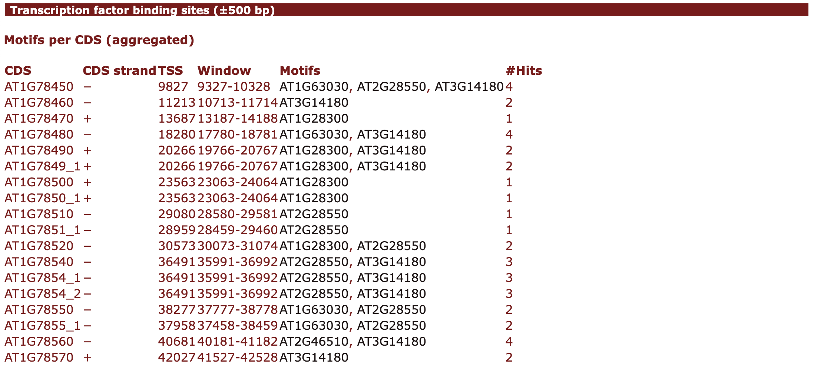
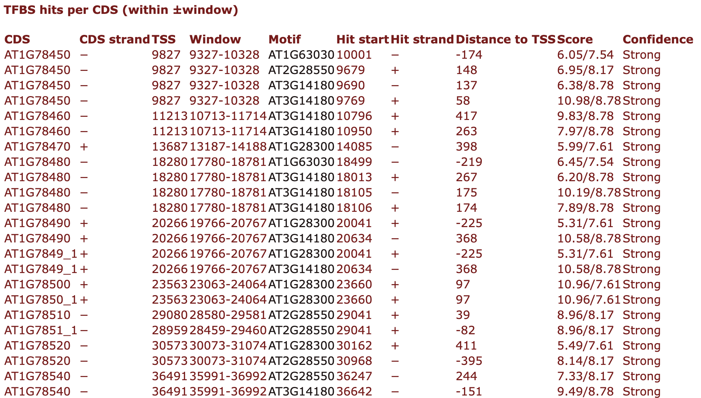
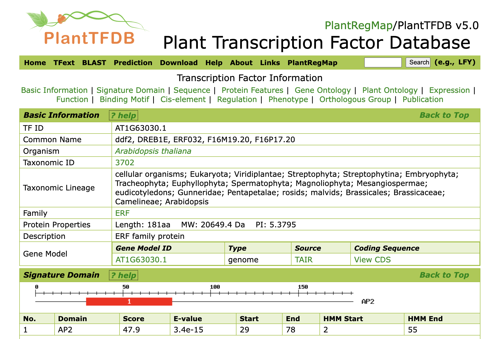

Transcription Factor Binding Site (TFBS) Prediction - TFBS Finder module#
This module predicts Transcription Factor Binding Sites (TFBSs) around genes and displays the results inside plantiSMASH cluster pages. It uses curated motif matrices (from PlantTFDB) and the MOODS scanner for fast, strand-aware motif search on DNA.
Method overview#
-
Motif library
A JSON file provides a set of TFBS profiles (one per TF) as 4×N matrices (A,C,G,T by position) and metadata (name, species, PlantTFDB link, consensus, min/max score). -
Where we scan
For each CDS in the contig, a promoter window is defined relative to its transcription start site (TSS) (approximated by the CDS start): -
+ strand CDS:
TSS = CDS.start→ scanned region:[TSS − W, TSS + 50] - − strand CDS:
TSS = CDS.end − 1→ scanned region:[TSS − 50, TSS + W]
This captures the upstream promoter region and includes up to 50 bp downstream of the TSS to account for potential regulatory motifs within the 5′ untranslated region (5′ UTR).
Within cluster pages, only CDS whose coordinates overlap the cluster are reported.
-
How we scan
Each window is scanned on both strands with MOODS using a motif-specific score threshold derived from a user-supplied p-value. Background nucleotide frequencies are estimated from the scanned window and assumed symmetric (A=T and C=G). -
Hit filtering and reporting
MOODS returns all hits scoring above the per-motif threshold. Hits are then: - collected per CDS window,
- reported with position, strand, distance to TSS, score,
- aggregated per CDS (unique motif names and hit counts).
MOODS-based scanning#
We rely on MOODS for exact, high-performance scanning:
- Matrix type: the module accepts PFMs or log-odds matrices. If any value is negative, the matrix is treated as log-odds; otherwise it is treated as a PFM and converted to log-odds with MOODS, using the window’s background distribution and a small pseudocount.
- Thresholds from p-value: for each motif, MOODS computes a score threshold
thrsuch that random hits exceedthrwith probabilitypunder the background model. - Strands: both forward and reverse-complement strands are scanned. Reverse hits are reported in forward coordinates.
Confidence labels (Weak / Medium / Strong)#
Each hit is labeled by comparing its score to per-motif min/max score statistics from the JSON:
- Weak:
score ≤ min_score - Strong:
score ≥ (min_score + max_score)/2 - Medium: otherwise
These labels are not the p-value; they bucket scores relative to each motif’s observed score range. If you curate
min_score/max_score, labels will track your expectations.
Input matrix format (JSON)#
The file contains a top-level dictionary keyed by motif/TF name:
{
"AT1G28300": {
"name": "AT1G28300",
"description": "Unknown transcription factor",
"species": "Arabidopsis thaliana",
"link": "https://planttfdb.gao-lab.org/tf.php?sp=Ath&did=AT1G28300.1",
"consensus": "ATGCATGC",
"max_score": 7.6068,
"min_score": 0.0214,
"pwm": [
[0.661184, 0.002475, ...], // A row, length = motif length
[0.332237, 0.002475, ...], // C row
[0.003289, 0.002475, ...], // G row
[0.003289, 0.992574, ...] // T row
]
}
}Notes -
pwmcan be PFM (non-negative, typically columns sum to ~1) or log-odds (can contain negatives). The module auto-detects. -min_scoreandmax_scoreare used only for confidence labels. -linkis shown in the HTML output (motif names become links). Legacy http://planttfdb.cbi.pku.edu.cn/... links are automatically mapped to https://planttfdb.gao-lab.org/....
Parameters & CLI usage#
Enable TFBS scanning and control sensitivity from the plantiSMASH CLI:
python run_antismash.py \
--tfbs-detection \
--tfbs-pvalue 1e-4 \
--tfbs-range 500 \
--taxon plants \
--outputfolder results/my_run \
my_sequences.gbff
Arguments
--tfbs-detection
Turn on the TFBS module.
--tfbs-pvalue FLOAT
Per-motif p-value used by MOODS to derive scan thresholds (e.g., 1e-4).
--tfbs-range INT
Half-window size (bp) around each CDS TSS to scan (e.g., 500 scans [TSS−500, TSS+500]).
Example in this documentation The A. thaliana results shown here were generated with p = 0.0001 and ±500 bp.
Output#
This module adds a “Transcription factor binding sites (±W bp)” panel to each cluster page with two data tables:
- Motifs per CDS (aggregated)
Summarizes which motifs occur within the window around each CDS TSS. - CDS: gene label (from
locus_tag,gene, orprotein_id) - CDS strand: orientation of the gene (+/−)
- TSS: coordinate used as transcription start site (TSS)
- Window: displayed portion of the scanned interval (clipped to cluster bounds)
- Motifs: unique TF motif names found in the window
- #Hits: total number of motif matches across those motifs

- TFBS hits per CDS (within ±window)
Full list of individual hits that pass the MOODS threshold. - CDS / CDS strand / TSS / Window: as above
- Motif: clickable motif name that links to the corresponding PlantTFDB TF page
- Hit start: genomic start (forward axis) of the match
- Hit strand: strand of the match (+/−)
- Distance to TSS: signed distance (negative = upstream, positive = downstream)
- Score: MOODS match score along with the motif’s
max_score(for context) - Confidence: Weak / Medium / Strong (label derived from per-motif min/threshold/max; see “Confidence labels”)

Example settings for the screenshots in this documentation
Species: A. thaliana — p-value = 0.0001, scan window = ±500 bp around each CDS TSS.
Hits are linked to PlantTFDB

Customization#
Use your own motif library#
You can run the TFBS Finder with any set of motifs as long as they follow the expected JSON format (4×N A/C/G/T rows per motif plus metadata).
- Create a JSON file in the same format as the bundled library (see “Input matrix format” above).
- Place the file in
antismash/generic_modules/tfbs_finder/data/. - Point the module to it by updating the path in:
# antismash/generic_modules/tfbs_finder/tfbs_detection.py
PWM_PATH = utils.get_full_path(__file__, os.path.join("data", "MY_MOTIFS.json"))
Tips#
If your matrices are PFMs (non-negative, columns ≈ sum to 1), the module will convert them to log-odds using MOODS and the local background of each scanned window.
If your matrices are already log-odds (may include negatives), they’ll be used as-is.
The confidence labels (Weak/Medium/Strong) depend on the min_score and max_score values you provide per motif; adjust them to suit your library.
Known limitations#
Confidence labels are heuristic and rely on the min_score/max_score ranges supplied in the JSON. If your PFMs are transformed to log-odds, you may wish to re-estimate these bounds for clearer labeling.
The motif library path is configured in code (PWM_PATH). If you need to switch libraries at runtime, consider adding a small CLI option to pass a custom JSON path.
🌿 Browse the A. thaliana TFBS results#
You can explore the complete TFBS detection output used in these examples directly from the plantiSMASH database:
🔗 Browse TFBS-finder results for A. thaliana
This directory contains two restrictive motif sets:
These correspond to curated TFBS motif subsets described in
Zenodo record 10.5281/zenodo.17144325,
representing different levels of motif stringency.
For more details on how these results were generated, see the
database documentation.